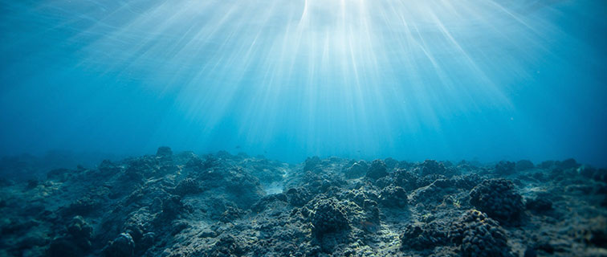

Sea Level Rise Coalition
A new report from the Intergovernmental Panel on Climate Change (IPCC) warns that extreme events caused by sea-level rise from melting ice caps – high tides, intense storms, and massive floods that used to occur once a century- will strike every year worldwide by 2050, no matter whether global emissions are curbed or not.
The report, written by more than 100 climate and marine scientists from more than 36 countries, explores the links between oceans, glaciers, ice caps and the climate. It states that sea level rose globally by about 15 cm during the whole of the 20th century, and it is currently raising more than twice as fast, and accelerating over time.
“The case is incontrovertible, in my opinion, the first step would be to create an international coalition titled “Island Peoples Sovereignty Coalition” (“IPSC”) a united international alliance presenting their unique circumstances which will only preclude the global consequences, highlighting viable solutions across the globe” Isaias Medina III, Hawaiian Kingdom, and the Sultanate of Sulu Ambassador-at-Large.

The impact of sea level rise caused by climate change poses a substantial threat to certain island nations in the Pacific and Indian Oceans as well as the worldwide disappearance of large masses of continental coastal territories. Nearly 2.4 billion people (about 40 percent of the world’s population) live within 100 km (60 miles) of the coast[i]. In addition to other vulnerabilities, the territories of these island nations and coastal lands may become partially or completely submerged.
The institution of sovereignty is facing unforeseen challenges like mass human rights violations, climate change, and the possible largest migration crisis in history as the “rising seas could result in 2 billion refugees by 2100”[ii] forcedly displacing coastal populations creating a crisis only comparable to the next 6th largest mass extinction[iii] in history, cited as the Anthropocene extinction[iv] due to the scientific fact that both are caused by human actions.
The UN General Assembly has unanimously stated in its 70th session that “Climate change is one of the greatest challenges of our time and its adverse impacts undermine the ability of all countries to achieve sustainable development. Increases in global temperature, sea-level rise, ocean acidification and other climate change impacts are seriously affecting coastal areas and low-lying coastal countries, including many least developed countries and small island developing States. The survival of many societies, and of the biological support systems of the planet, is at risk.”
Small Islands Development States need our collaboration with a short, medium and long term plan, here is how we can help:
There are clearly two issues to be addressed by the International Community and/or International Public Private Partnerships through RFPs to enable a rescue plan of small islands:
- Tender high-tech dredging and vibro-compaction technology to remediate, mitigate and raise the current sea level;
- Raise buildings to resist long term inundation of low-lying coastal areas and of islands to avoid creating further zones less and less habitable or uninhabitable, resulting in their partial or full depopulation of atoll and low islands in the pacific. Start with Kiribati, Tuvalu, Marshall Islands and continue the model to every other island in peril of disappearance, which merits immediate urgent intervention.

The UN General Assembly has unanimously stated in its 70th session that “Climate change is one of the greatest challenges of our time and its adverse impacts undermine the ability of all countries to achieve sustainable development. Increases in global temperature, sea-level rise, ocean acidification and other climate change impacts are seriously affecting coastal areas and low-lying coastal countries, including many least developed countries and small island developing States. The survival of many societies, and of the biological support systems of the planet, is at risk.”
Small Islands Development States need our collaboration with a short, medium and long term plan, here is how we can help:
There are clearly two issues to be addressed by the International Community and/or International Public Private Partnerships through RFPs to enable a rescue plan of small islands:
- Tender high-tech dredging and vibro-compaction technology to remediate, mitigate and raise the current sea level;
- Raise buildings to resist long term inundation of low-lying coastal areas and of islands to avoid creating further zones less and less habitable or uninhabitable, resulting in their partial or full depopulation of atoll and low islands in the pacific. Start with Kiribati, Tuvalu, Marshall Islands and continue the model to every other island in peril of disappearance, which merits immediate urgent intervention.